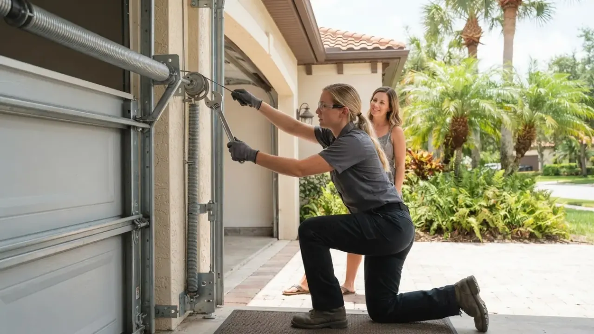

Your local Sulphur Springs garage door repair team
Garage door repair in Sulphur Springs done right the first time
When your garage door quits, you need garage door repair in Sulphur Springs that shows up fast and fixes it for good. We work the 33604 ZIP every week, from the older detached garages off the Hillsborough River to the newer builds near North Tampa. Broken springs, snapped cables, dead openers, doors off track: we carry the parts and the tools to handle it in one visit. Call and we will tell you what it costs before we start.
24/7 dispatchSulphur Springs ZIP codesResidential & commercial
Local system knowledge
Garage door repair in Sulphur Springs you can count on
Garage door repair in Sulphur Springs is the work we do most, and it shows in how fast we diagnose a problem. This is a historic neighborhood with a lot of older detached garages, and those doors take a beating from Florida humidity. Torsion springs rust, cables fray, and wood frames swell until the track is out of line. We keep torsion springs, galvanized steel cables, and nylon garage door rollers on the truck so most jobs finish the same day. We work 33604 and the streets around Sulphur Springs Pool, and we know which driveways are tight and which alleys give us room to pull a panel. If you need Sulphur Springs garage door repair, you get a straight answer on what failed and what it costs to fix. No runaround, no upsell on a door that still has years left.
Explore Sulphur Springs services
garage door repairs Tampa FlSulphur Springs sits close to the Hillsborough River, and that humidity does real damage to garage door hardware. Springs corrode faster here than they do inland, and older detached garages often have wood framing that moves with the seasons. We serve this area because the demand is steady and the housing stock is varied. One street has 1940s bungalows with single-car doors, the next has newer builds with insulated two-car doors and smart openers. That range means we stay sharp on LiftMaster, Chamberlain, Genie, and Craftsman systems alike. We also cover Lowry Park Central and University, so we are rarely far from a Sulphur Springs call.
Services available in Sulphur Springs
Garage door repair services available in Sulphur Springs
Sulphur Springs garage door repair calls break down into a few clear categories: springs that snap, openers that quit, and doors that jump track. The humid air near the Hillsborough River speeds up corrosion on springs and cables, so we see more of those failures here than in drier parts of Hillsborough County. If you are searching for garage door repair near me Sulphur Springs, the list below covers what we actually do on a typical week in 33604.
01
Garage Door Repair
General garage door repair in Sulphur Springs covers whatever is keeping your door from moving right. We check the springs, cables, rollers, hinges, and track, then fix the actual failure instead of guessing. Most 33604 homes we visit have one clear problem and a couple of worn parts worth replacing while we are there.
02Garage Door Spring Repair
Broken torsion springs are the number one call we get in Sulphur Springs. When a spring snaps, the door gets heavy and dangerous fast. We replace both springs as a pair, match the cycle rating to your door weight, and use winding bars to set the correct tension. Most spring jobs take under two hours.
03Garage Door Opener Repair
Opener problems in Sulphur Springs often trace back to stripped gears, dead logic boards, or a remote that lost its code. We test the unit, check the safety sensors, and repair or replace what failed. LiftMaster and Chamberlain units are common here, and we stock the parts that fail most.
04Garage Door Cable Repair
A snapped garage door cable can drop a door crooked or leave it stuck. In Sulphur Springs, humidity rusts the galvanized steel cables until strands break. We replace both cables, reset the drums, and level the door so it travels straight. Never run an opener with a broken cable.
05Garage Door Panel Repair
Dented or cracked panels are common on older Sulphur Springs doors, especially the wood and steel doors on detached garages. We replace single sections when the door is still structurally sound, matching the profile and color as close as the manufacturer allows. Full replacement only when the frame is compromised.
06Garage Door Roller Repair
Noisy, grinding doors in Sulphur Springs usually need rollers. Steel rollers rust and flat-spot; nylon rollers wear quieter but crack over time. We swap them out, check the hinges while we are in there, and lubricate the track so the door glides instead of shudders.
More than a service list
How we handle garage door repair in Sulphur Springs
Every garage door repair in Sulphur Springs starts with a full look at the door, not just the part that broke. We check the balance, the springs, the cables, the rollers, and the opener travel. On the older detached gara
Humidity near the Hillsborough River rusts springs and cables
Corrosion shortens spring life and frays galvanized steel cables faster than in drier parts of Hillsborough County. Doors here fail earlier and often without warning. How we help: We inspect for rust on every Sulphur Springs call, replace cables with humid-rated stock, and lubricate torsion springs with a product that holds up in damp air. We also tell you when a spring is close to failing so you can plan the fix.
Older detached garages with wood framing and narrow driveways
Wood frames move with the seasons, which throws tracks out of alignment. Narrow driveways limit where we can park and how we stage tools and panels. How we help: We carry a track bender and shim stock to correct alignment without replacing the whole track. We walk the driveway first and stage the truck on the street when needed, so we are not blocking your neighbor or your own car.
Mixed housing stock from historic bungalows to newer builds
A 1940s single-car door and a new insulated two-car door need different springs, openers, and hardware. One truck cannot carry everything for both. How we help: We ask what kind of door you have when you call, then load the right springs, rollers, and opener parts for that door. If we are missing something, we say so up front instead of guessing and coming back twice.
Early warning signs
Signs you need garage door repair in Sulphur Springs
A small visible symptom can point to a bigger pattern.
Loud bang from the garage
Loud bang from the garage
Door opens crooked or looks uneven
Door opens crooked or looks uneven
Opener runs but door does not move
Opener runs but door does not move
Safety sensors blink and door will not close
Safety sensors blink and door will not close
Clear starting points
What garage door repair costs in Sulphur Springs
Typical 2026 pricing for garage door repair in Sulphur Springs runs from about $150 for a simple roller or sensor fix up to $600 or more for a full spring and cable job. Most calls land in the $250 to $450 range. Springs are the most common repair, and a pair of torsion springs installed usually costs $300 to $450 depending on door size and cycle rating. Opener repairs run $150 to $350, and a new opener installed runs $400 to $800. Older detached garages here sometimes add cost because the framing needs adjustment before the door will run right. We quote the job before we start, so you know the number going in.
Door size and weight
A single-car door uses lighter, cheaper springs than a two-car insulated door. Sulphur Springs has both, and the price difference on springs alone can be $100 or more. We match the spring to the door, never guess.
Part quality and cycle rating
Standard springs last about 10,000 cycles; high-cycle springs cost more but last two to three times longer. On a door that opens several times a day, the upgrade pays for itself. We quote both options.
After-hours or emergency timing
A 2 a.m. call costs more than a Tuesday morning appointment. Emergency garage door repair in Sulphur Springs carries a call-out fee, and we tell you what it is before we dispatch. Same-day daytime work stays at standard rates.
We know the route
Getting around Sulphur Springs
Sulphur Springs is a small historic neighborhood, so we navigate by landmarks rather than street numbers. The Sulphur Springs Museum and the pool are the two easiest anchors, and most of our calls are within a few blocks of one or the other. The Hillsborough River sets the western edge, and we know which streets dead-end at the water and which loop back toward North Tampa. That matters when we are routing a same-day call and trying to beat traffic on Florida Avenue.
Sulphur Springs Museum
A central anchor on the neighborhood's main corridor. We use it to orient calls on the surrounding blocks and to give customers a simple meeting point when a driveway is hard to find.
Sulphur Springs Pool
The pool sits in the middle of the residential grid, so it is a quick reference for routing to nearby streets. We know the parking situation around it and plan around busy afternoons.
Hillsborough River
The river marks the western boundary of the neighborhood. Knowing where the streets run toward the water helps us pick the fastest route and avoid dead ends on the way to a call.
ZooTampa at Lowry Park
A major landmark just south of Sulphur Springs. We use it as a reference point for calls in Lowry Park Central and to gauge traffic on the main roads during busy weekends.
Sulphur Springs service coverage
Is your ZIP on the route?
These are our most frequently served ZIP codes. Nearby areas may also qualify — call if you do not see yours.
7548275483
Popular neighborhoods: Sulphur Springs · North Tampa · Lowry Park Central · University
Check my address →
1234
Primary Sulphur Springs response zoneSame-day response depends on current call volume, technician availability, and required equipment.
Reviews from Sulphur Springs customers
What Sulphur Springs customers say
★★★★★
“My torsion spring snapped on a Saturday morning and I could not get the car out. They answered, gave me a price on the phone, and had a tech here before noon. He replaced both springs, checked the cables, and showed me the old ones so I could see the rust. Door runs better than it has in years.”
★★★★★
“Our opener kept running but the door would not lift. Turns out the gear was stripped and a cable was frayed. They fixed both in one visit and reprogrammed our remotes and the keypad. Fair price, no upsell, and they cleaned up the garage floor before they left.”
★★★★★
“Called about a door that was off track and grinding. They came out the same day, straightened the track, and replaced a couple of bent rollers. Explained why the wood frame had shifted and what to watch for. Honest work at a fair price.”
Outside Sulphur Springs?
Nearby cities we also serve

Downtown Tampa
About 15 minutes south of Sulphur Springs. We run downtown calls on the same days we are in 33604, so scheduling is easy.
Channelside
South of Sulphur Springs near the port. Condo and townhome garage doors there are a different job than a detached garage, and we handle both.
Hyde Park
A short drive south. Older homes in Hyde Park have similar garage door hardware to what we see in Sulphur Springs.Sulphur Springs garage door repair local notes
Local Notes for Sulphur Springs
Sulphur Springs is one of Tampa's older neighbourhoods in Hillsborough County, with many historic homes and older garages that were not built for today's wider, heavier doors.
Sulphur Springs sits along the Hillsborough River, and its older homes and mature trees mean falling limbs are a regular cause of bent tracks and dented panels.
Heat and humidity wear on springs and opener electronics all year, and older doors often need a balance check before a new opener will work properly.
When a hurricane is forecast, reinforcing the door and disconnecting the opener before the storm can keep a bad night from turning into a door stuck open.
Sulphur Springs garage door repair FAQ
FAQs about garage door repair in Sulphur Springs
A real dispatcher is available if your question is not answered here.
Call +1 (773) 915-6384How much does garage door repair cost in Sulphur Springs?
Most garage door repair in Sulphur Springs runs $150 to $450, with spring replacements at the higher end and simple roller or sensor fixes at the lower end. A full spring and cable job can reach $600. We quote the price before we start, and there is no charge for the estimate on standard appointments.
Who is the best garage door repair company in Sulphur Springs?
The best garage door repair Sulphur Springs homeowners can hire is one that is licensed, insured, stocks common parts, and quotes the job before starting. Look for a company that replaces springs in pairs and offers a written warranty. We do all of that, and we work 33604 every week.
Is there 24/7 garage door repair in Sulphur Springs?
Yes. We answer the phone around the clock for 24/7 garage door repair in Sulphur Springs and the surrounding area. Emergency calls get priority, especially doors stuck open, doors off track, and snapped springs blocking a car in. After-hours calls carry a call-out fee that we quote before dispatch.
How do I choose a garage door repair service in Sulphur Springs?
Ask three things: are they licensed and insured in Florida, do they quote the price before starting, and do they warranty the parts and labor. A company that answers all three clearly is worth hiring. One that dodges the licensing question or adds fees on arrival is not.
Do you offer emergency garage door repair in Sulphur Springs?
We do. Emergency garage door repair in Sulphur Springs covers doors stuck open, doors off track, snapped cables, and broken springs that leave your car trapped. Call any hour and we will route a tech with the parts to secure or fix the door. Most emergency calls are handled the same day.
Sulphur Springs dispatch is ready
Need garage door repair Tampa? Call now
A door that will not close is a security risk, and a snapped spring only gets worse. We answer 24/7, quote before we start, and carry the parts to finish most jobs the same day. Call and we will get a truck moving.
Talk with the local team
Request Sulphur Springs service
Call, text or email and a real person answers, day or night. Tell us what the door is doing and we will give you a price range on the spot plus the soonest arrival window. Most calls placed before mid-afternoon get a same-day visit anywhere in Hillsborough County.